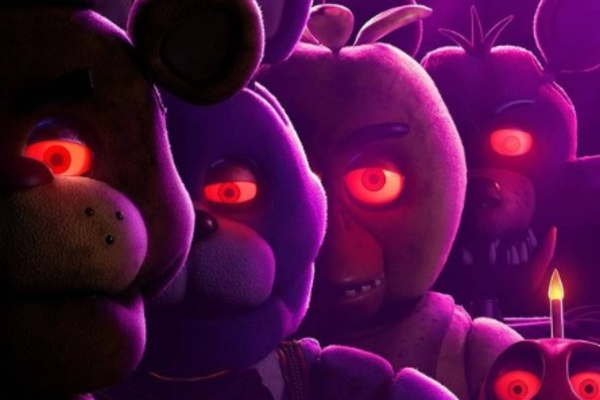
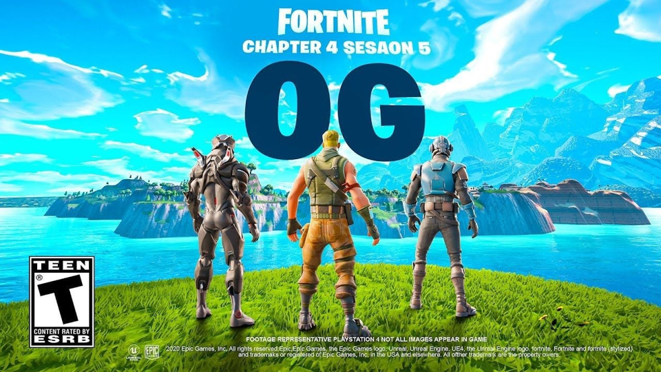

Blogs
Five Nights at Freddy's
Being one of the most anticipated films, the film finally came out and although with a simple story it was loved and defended by the fans so much that a second and even a third film was confirmed (draft)
The Game Awards
Finally, the nominees are mentioned and whoever you vote for, enter to meet them. Will your favorite game be in any nomination? go to the link to see them (draft)

Fortnite
After a drop in players, Fortnite seems to have used nostalgia to bring in new and especially old players, it turns out well! See more of the announcement so you can see what Fortnite brought back to the game (draft)
